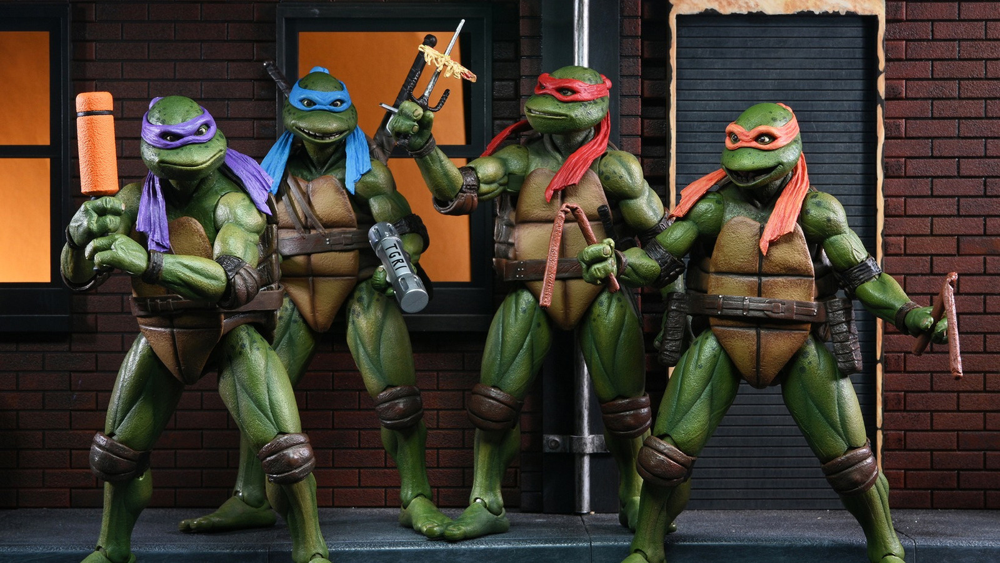

About Leo
Leo is the TMNT leader featured in countless comics, tv shows, movies, and other media.
Donnie, Leo, Raph, and Mikey
Leo Breakdown
- Uses two katana
- Calm, collected personality
- Strong leadership skills
- Best fighter of the TMNT family
TMNT and Support
Leo is supported by his brothers, Master Splinter, and a few human friends. Explore the links below to learn about the full TMNT family: